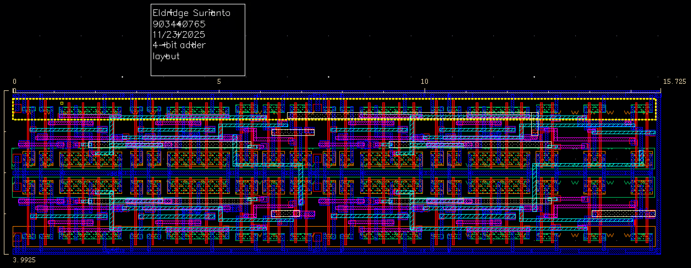

This project involved the design and optimization of a 4-bit adder circuit at the transistor level using Cadence Virtuoso. The design encompasses a complete VLSI workflow: from schematic capture through full-custom CMOS layout, to rigorous timing analysis and optimization of critical paths. The project demonstrates practical expertise in industry-standard CAD tools, understanding of CMOS circuit design principles, and the ability to optimize hardware for both correctness and performance under various process conditions.
Project Overview
The objective of this project was to design a fully functional 4-bit adder circuit from first principles at the transistor level. This involved creating efficient CMOS implementations of fundamental building blocks (inverters, NAND gates, XOR gates) and hierarchically combining them to form a complete adder. The design was then synthesized into a full-custom layout, where every transistor and routing path was manually optimized for performance and area efficiency.
Key Design Objectives
- Transistor-Level Implementation: All logic gates implemented from NMOS and PMOS transistor primitives
- Full-Custom Layout: Hand-crafted physical layout optimizing for minimal area and delay
- Timing Optimization: Critical path analysis and device sizing to meet performance targets
- Process Robustness: Verification across multiple process corners and operating conditions
- Complete Verification: Comprehensive simulation and failure path analysis

Transistor-level schematic of the 4-bit adder showing hierarchical gate structure

Full-custom CMOS layout with optimized routing and device placement
Design Methodology
The design followed a hierarchical, bottom-up approach:
1. Basic Logic Gates (Transistor Level): Started with fundamental CMOS gates including inverters, NAND gates, and XOR gates, each optimized for speed and power efficiency.
2. Full Adder Cell: Combined basic gates to create a full adder (1-bit) that adds three inputs (A, B, Cin) and produces sum and carry-out.
3. 4-bit Adder: Cascaded four full adder cells with carry propagation logic to create the complete 4-bit adder circuit.
4. Layout Design: Translated the schematic into physical layout, carefully placing transistors and routing metal layers to minimize parasitics and delay.
1. Basic Logic Gates (Transistor Level): Started with fundamental CMOS gates including inverters, NAND gates, and XOR gates, each optimized for speed and power efficiency.
2. Full Adder Cell: Combined basic gates to create a full adder (1-bit) that adds three inputs (A, B, Cin) and produces sum and carry-out.
3. 4-bit Adder: Cascaded four full adder cells with carry propagation logic to create the complete 4-bit adder circuit.
4. Layout Design: Translated the schematic into physical layout, carefully placing transistors and routing metal layers to minimize parasitics and delay.
Technical Implementation Details
- Tool Used: Cadence Virtuoso for schematic entry and full-custom layout
- Design Language: Schematic-based (transistor-level) with physical layout in standard cell design methodology
- Simulation: Cadence Spectre for transistor-level SPICE simulation and timing analysis
- Design Rule Checking (DRC): Verified compliance with process technology design rules
- Layout vs. Schematic (LVS): Ensured layout accurately represents schematic topology
Timing Analysis & Optimization
A critical aspect of this project was identifying and optimizing the critical paths through the adder:
Path Analysis: Traced timing paths from inputs to outputs, identifying which signal transitions take the longest. For an adder, the carry propagation chain is typically the critical path—each stage must wait for the carry from the previous stage before computing its own output.
Failing Paths Identification: Through transient simulation with various input patterns, potential timing violations were identified under worst-case conditions (temperature corners, supply voltage variations, process corners).
Optimization Techniques:
Path Analysis: Traced timing paths from inputs to outputs, identifying which signal transitions take the longest. For an adder, the carry propagation chain is typically the critical path—each stage must wait for the carry from the previous stage before computing its own output.
Failing Paths Identification: Through transient simulation with various input patterns, potential timing violations were identified under worst-case conditions (temperature corners, supply voltage variations, process corners).
Optimization Techniques:
- Device Sizing: Increased transistor W/L ratios on critical paths to reduce delay
- Routing Optimization: Minimized wire lengths and reduced parasitic capacitance on critical signal paths
- Buffer Insertion: Added strategic buffers to break long RC chains and improve signal integrity
- Layout Placement: Positioned critical gates close together to minimize interconnect delay
Simulation & Verification
- Functional Verification: Tested all 16 possible input combinations for each bit position to verify correct addition
- Timing Verification: Applied timing constraints and verified all paths meet delay requirements
- Corner Analysis: Simulated across process corners (typical, fast, slow) and temperature ranges (-40°C to 125°C)
- Power Analysis: Characterized dynamic and static power consumption under operating conditions
- Failure Path Analysis: Identified and corrected any critical paths that violated timing constraints
Key Learnings & Takeaways
This project provided hands-on experience with:
✓ Transistor-level circuit design: Understanding CMOS logic families and how to build complex circuits from basic gates
✓ Full-custom layout design: Physical layout considerations, routing strategies, and parasitic extraction
✓ Timing closure: Identifying critical paths, understanding timing slack, and optimizing designs to meet constraints
✓ Design automation tools: Proficiency with industry-standard Cadence tools (Virtuoso, Spectre)
✓ Hierarchical design methodology: Building complex circuits from reusable, verified components
✓ Physical design principles: Trade-offs between area, speed, and power in VLSI design
✓ Transistor-level circuit design: Understanding CMOS logic families and how to build complex circuits from basic gates
✓ Full-custom layout design: Physical layout considerations, routing strategies, and parasitic extraction
✓ Timing closure: Identifying critical paths, understanding timing slack, and optimizing designs to meet constraints
✓ Design automation tools: Proficiency with industry-standard Cadence tools (Virtuoso, Spectre)
✓ Hierarchical design methodology: Building complex circuits from reusable, verified components
✓ Physical design principles: Trade-offs between area, speed, and power in VLSI design
Design Specifications
- Inputs: 4-bit operand A, 4-bit operand B, carry-in (Cin)
- Outputs: 4-bit sum (S), carry-out (Cout)
- Technology: CMOS (standard process node)
- Supply Voltage: Nominal 5V (or per process specification)
- Performance Target: Optimized for speed with timing constraints verified
- Functionality: Ripple Carry Adder (RCA) architecture